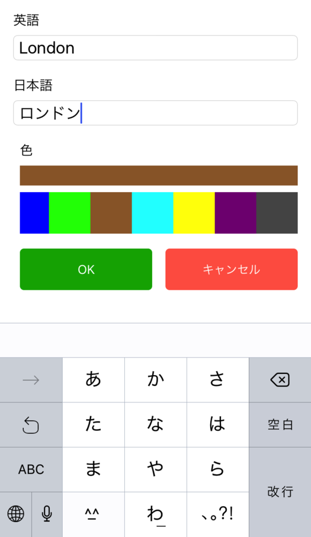
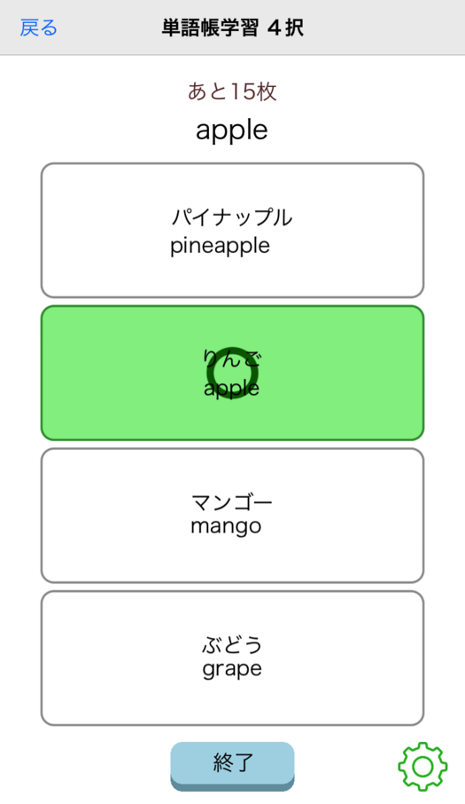
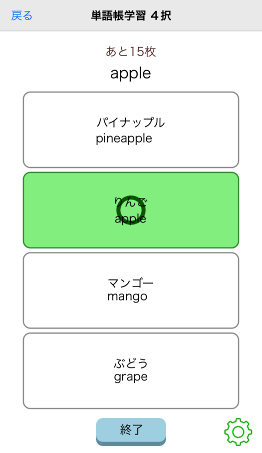
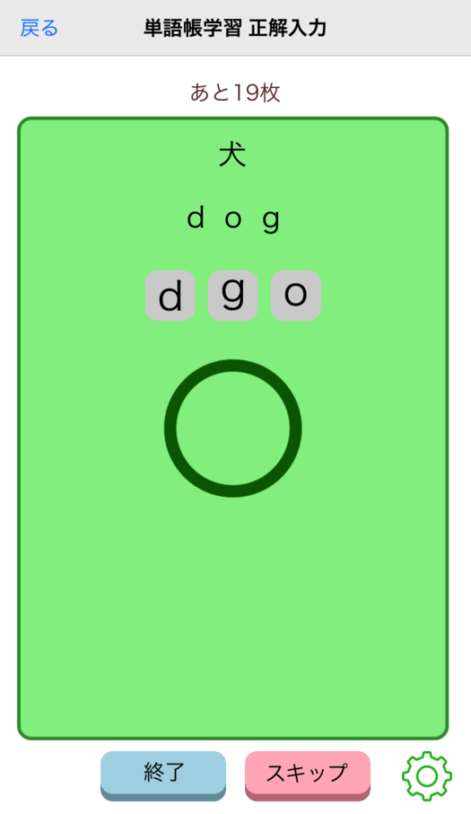
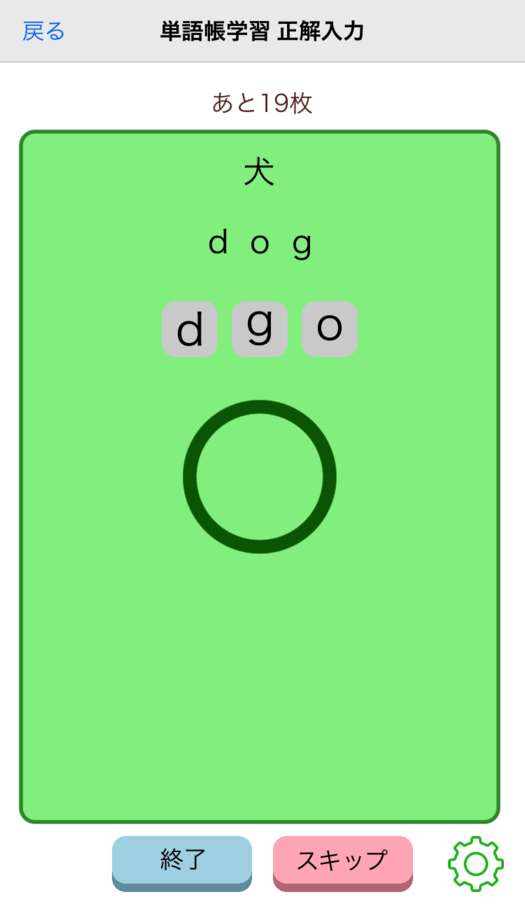

１枚ずつカードをめくって（スライド）して、覚えているカードとそうでないカードを振り分けていきます。
実際の単語帳を使うのと近い感覚で単語を覚えることができます。

カラフル単語帳はアプリに単語帳のデータは含まれていないため、覚えたい単語カードとそれをまとめた単語帳を自分で作る必要があります。
単語帳の作成の手順は以下のようになります。
単語帳の作成は独自のUI(ユーザーインターフェース)で、直感的に作ることができます。
単語帳編集ページ（このページで単語帳を作成します）
単語カードは実際の単語カードを作るとき同様、覚えたい英語、日本語を入力します。
単語カード作成ダイアログ（単語カードの英語、日本語を入力します）
単語帳を作成したら、それを学習モードで学習（覚える作業）してみましょう。
単語の学習モードは４つあります。お好みのモードをご利用ください。
１枚ずつカードをめくって（スライド）して、覚えているカードとそうでないカードを振り分けていきます。
実際の単語帳を使うのと近い感覚で単語を覚えることができます。
まとめてカードをめくって（スライド）していくモードです。
まとめて何枚かのカードが表示されるので、１枚ずつめくるよりもスピーディーに学習を行うことができます。

４枚のカードから正解のカードを選ぶモードです。客観的に覚えているかどうかを確認したい場合におすすめです。
 

単語の英語スペルを入力するモードです。日本語の表示を元に英語のスペルを１文字ずつ入力していきます。
 

単語を覚えるときに実際の単語帳と同じように、単語帳をめくる方向を指定することができます（英語➡️日本語 、日本語➡️英語）。